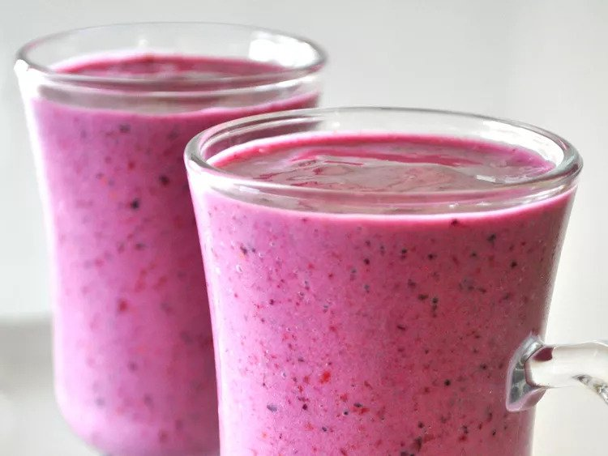

Fruit and Yogurt Smoothie

Description
This yogurt smoothie recipe is delicious! You may substitute the strawberries for any other berries or fruit.
Ingredients
1 cup strawberries
1 banana
½ cup yogurt
¼ cup pineapple juice
1 ½ teaspoons white sugar
1 teaspoon orange juice
1 teaspoon milk
Steps
- Combine strawberries, banana, yogurt, pineapple juice, sugar, orange juice, and milk in a blender; blend until smooth.